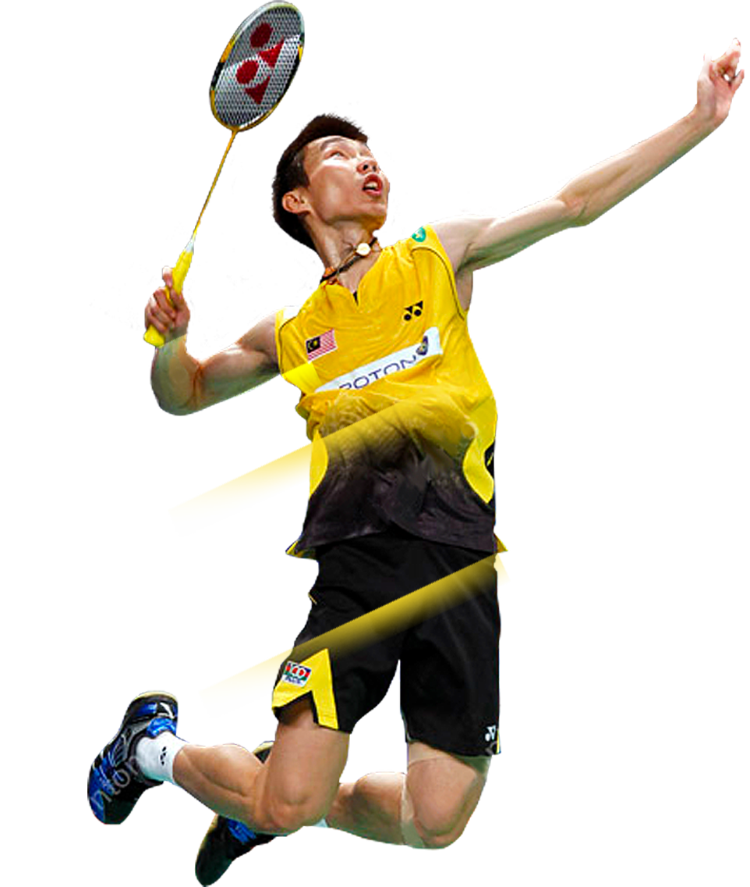
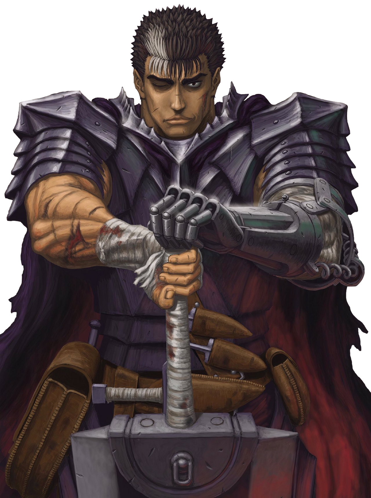

- Mon parcours scolaire
- Mes passions
Je m'appelle Quentin MARTINEZ, j'ai 19 ans, et je suis étudiant à l'université de Blagnac en seconde année de BUT Informatique.
J'ai effectué mes années de lycéen à Perpignan. En effet, j'ai effectué ma seconde dans un lycée en général (Lycée François Arago).
Puis par la suite, je me suis redirigé vers une formation STI2D, j'ai donc passé ma première et terminale au lycée Sainte-Louise de Marillac.
J'ai pu développer diverses compétences telles que le développement du travail en équipe et en projet.
En effet, j'ai pu élaborer ses compétences grâce à divers projets que nous avons effectués tout au long du parcours scolaire.
La compétence du travail en équipe est l'une des compétences les plus importantes pour le travail en entreprise.
J'ai effectué pendant 5 années de la guitare acoustique, ce qui m'a permis d'améliorer ma concentration.
J'aime la lecture en particulier les mangas, cela me permet de "m'évader" lorsque je suis fatigué ou épuisé.
J'effectue du Badminton à l'université, c'est un sport que j'apprécie, car c'est très dynamique.
Je suis également passionné de jeux vidéo, en effet il s'agit de mon divertissement préféré.
 